고대의 재발견
인문주의자와 미술가는 고대 문헌·조각·건축을 연구하며 비례와 조화, 인간 중심의 역사관을 현재의 언어로 바꾸었다.
Art Through Time · Movement Guide
14세기 후반부터 16세기까지 유럽 미술은 고대의 지식, 자연 관찰, 수학적 공간, 인간의 몸과 감정을 새롭게 결합했다. 이 문서는 나라별 르네상스를 병렬 사조로 나누지 않고, 하나의 공통 운동과 그 안에서 확인되는 시대 단계·화파·계보를 함께 읽는다.
르네상스의 핵심은 고대를 흉내 낸 양식이 아니라, 인간과 세계를 관찰하고 조직하는 새로운 시각 체계다.
학습 안내
처음에는 원근법·해부학·고전 고대·개별 인물의 존재감이라는 공통 축을 잡고, 이후 시대 단계와 공인된 화파가 그 원리를 어떻게 다르게 전개했는지 비교한다.
‘북방 르네상스’는 이 문서에서 독립된 지역 사조가 아니다. 지역은 활동 환경을 설명할 뿐이며, 초기 네덜란드 화파나 도나우파처럼 문헌상 명확히 성립한 집단만 르네상스 내부의 화파·계보로 구분한다.
르네상스는 고전 고대의 문학과 철학, 조형 원리를 되살리는 과정에서 인간의 이성과 감각 경험을 적극적으로 신뢰한 문화 운동이다. 미술에서는 공간을 측정하고, 몸의 구조를 관찰하며, 인물을 개별적 존재로 표현하는 태도로 나타났다.
이 공통분모는 피렌체·베네치아·네덜란드·독일의 모든 화가를 똑같게 만들지 않는다. 재료, 후원, 종교 문화, 작가의 개성이 서로 다른 결과를 낳았지만, 그 차이는 곧바로 별개의 ‘지역 르네상스 사조’를 뜻하지 않는다.
르네상스는 한 도시의 발명품이 아니라, 지식의 이동과 새로운 후원, 재료·기술의 교류가 장기간 겹친 결과다.
인문주의자와 미술가는 고대 문헌·조각·건축을 연구하며 비례와 조화, 인간 중심의 역사관을 현재의 언어로 바꾸었다.
선원근법, 명암법, 해부학 연구는 화면을 일관된 공간으로 만들고 인체에 무게와 운동감을 부여했다.
교회뿐 아니라 길드, 공화정 정부, 상인, 궁정이 주문자가 되면서 초상·신화·일상·풍경의 비중이 넓어졌다.
피렌체에서 원근법과 체적 표현이 건축·회화의 공통 문제로 부상했다.
네덜란드 화가들은 투명한 유채 층과 미세한 표면 묘사로 현실의 물질성을 강화했다.
해부학, 원근법, 고전적 균형과 심리 표현이 대규모 구성 안에서 높은 통일을 이루었다.
베네치아의 색채, 도나우 지역의 풍경, 북유럽의 초상과 일상 관찰이 르네상스의 가능성을 넓혔다.
새 사조는 앞선 미술을 한순간에 폐기하지 않는다. 이전의 시각 질서에서 무엇을 문제로 보았는지, 새 해결책이 어떻게 확립되었는지, 다음 세대가 그 해결책을 왜 다시 답답하게 느꼈는지를 두 작품씩 맞대어 본다.
르네상스가 비판한 것은 종교 주제 자체가 아니라, 금빛 위계와 정면성에 의해 인물과 공간이 초월적 질서에 고정되는 방식이었다. 조토의 두 작품은 기존 형식을 이어 받으면서 그 내부에서 몸의 무게와 감정, 장소의 통일성을 키우는 과정을 보여 준다.
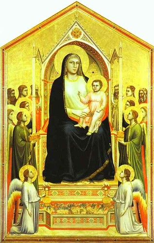
정면의 성모가 금빛 배경과 천사들의 대칭 속에서 가장 크게 제시된다. 왕좌와 무릎에 부피가 생겼지만, 크기의 위계와 성스러운 정면성은 여전히 화면의 기본 질서다.
볼 지점: 실제 공간처럼 보이는 왕좌와 중세적 위계가 한 화면에서 어떻게 공존하는가.
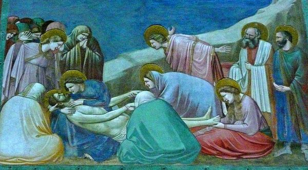
등을 보인 인물, 무게를 지닌 몸, 사선의 바위와 집중되는 시선이 관람자를 사건 안으로 끌어들인다. 성스러운 서사가 추상적 표지에서 인간이 같은 장소에서 겪는 상실의 경험으로 바뀐다.
볼 지점: 바위의 사선과 인물의 몸짓이 슬픔의 방향을 하나로 모으는 방식.
변화: 위계적 상징을 없애기보다, 그 안에 관찰된 몸과 공유되는 감정, 통일된 장소를 집어넣는 데서 르네상스의 태동이 시작된다.
비잔틴과 고딕은 어느 한 계급만의 미술이 아니었다. 교회, 군주와 귀족, 도시 공동체가 주문한 제단화·성상·건축은 신성한 위계와 공동체의 질서를 보이게 했다. 르네상스도 이 종교적 기능을 폐기한 반란이 아니다. 다만 14~15세기 이탈리아의 도시공화국에서는 길드, 상인·은행가, 공증인과 인문주의 지식인이 정치·경제·문화의 새로운 발언권을 얻었고, 이들은 고대의 공화정·시민적 덕·개별 명예를 현재의 언어로 쓰고자 했다.
피렌체의 주문자는 교회에 한정되지 않았다. 길드는 공공 조각과 제단화를, 부유한 가문은 예배당·궁전·초상을, 도시 정부는 공동체의 위신을 위한 이미지를 주문했다. 측정 가능한 원근 공간과 무게를 가진 개인은 ‘세상이 신적 위계만으로 고정되어 있다’는 뜻이 아니라, 시민과 관람자가 같은 현실 공간과 역사 속에서 판단하고 행동한다는 감각을 제공했다.
그러나 새 언어가 곧바로 기득권의 바깥에만 있었던 것은 아니다. 메디치처럼 상업·금융에서 성장한 가문은 인문주의와 예술 후원을 통해 경제력을 공적 명예와 정치적 권위로 바꾸었다. 따라서 르네상스의 태동은 기존 질서를 완전히 뒤집은 단일 계급의 선언이 아니라, 교회·도시·길드·상인·가문이 경쟁하고 협력하는 환경에서 ‘인간과 도시를 어떻게 보일 것인가’를 다시 협상한 결과다.
사조가 정착되는 방식: 새로운 사조는 신예 화가가 혼자 만드는 것이 아니다. 새 표현이 자신의 신앙, 명예, 부, 도시의 위신, 통치 권위를 잘 드러낸다고 여긴 후원자와 시장이 주문하고 전시하고 유통할 때, 화가의 실험은 반복 가능한 화풍이 된다. 후원 그룹이 새로 생기거나 기존 그룹의 가치관과 권력 구조가 바뀌는 일은 사조 태동의 중요한 조건이다. 그러나 그 변화는 새 세력만의 일이 아니다. 새 양식은 종종 기존 교회·궁정·도시 엘리트에게도 유용해 빠르게 채택되며, 그래서 한 사조 안에는 도전과 흡수, 경쟁과 협력이 함께 남는다.
초기 르네상스의 핵심 발명은 관람자의 눈을 기준으로 화면 공간을 계산하는 일이었다. 전성기에 이르면 이 기술은 그 자체를 과시하는 장치를 넘어, 고대의 지식과 수많은 인물의 사고·몸짓을 조화롭게 조직하는 보이지 않는 질서가 된다.
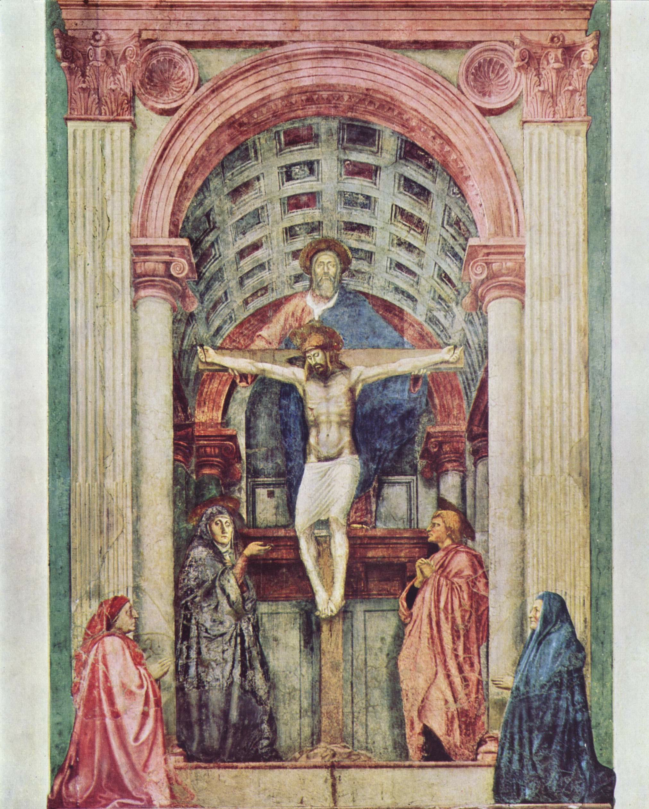
하나의 소실점과 고전 건축의 비례가 평면 벽을 깊은 예배 공간처럼 연다. 원근법은 신성한 존재와 실제 관람자를 같은 시각 체계 안에 놓는 명시적인 선언처럼 작동한다.
볼 지점: 관람자의 눈높이에 놓인 소실점이 건축과 인물의 위치를 어떻게 결정하는가.
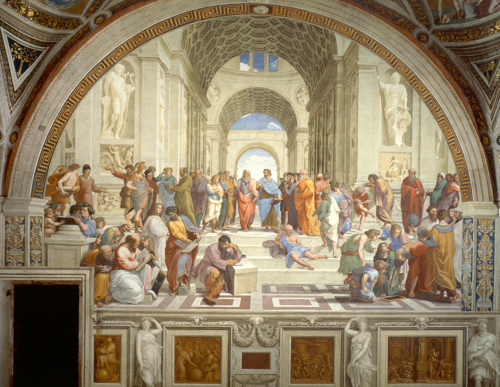
원근 건축은 더 이상 별도의 실험처럼 보이지 않는다. 중앙의 철학자와 여러 인물군, 고대 건축과 개별 몸짓을 자연스럽게 연결해 지식 공동체 전체를 하나의 명료한 세계로 만든다.
볼 지점: 중심축의 안정과 서로 다른 인물군의 리듬이 다양성을 잃지 않고 통일되는 방식.
진화: 마사초에게 원근법이 현실 공간을 증명하는 혁신이었다면, 라파엘로에게는 고대·인간·지식을 조화시키는 종합 언어가 되었다.
매너리즘은 르네상스를 몰라서 균형을 잃은 양식이 아니다. 이미 완성된 중심 원근법, 자연스러운 비례, 안정된 군상 구성이 반복 가능한 규범이 되었을 때, 다음 세대는 길어진 몸과 얕고 모호한 공간, 인공적인 색으로 그 규범을 의식적으로 압박했다.

모든 원근선과 심리적 반응이 중앙의 그리스도에게 모인다. 다양한 감정이 폭발하면서도 건축, 삼인조 군상, 수평선이 전체를 완벽하게 통제하는 전성기 르네상스의 이상을 보여 준다.
볼 지점: 격렬한 감정조차 중심축과 기하학적 질서 안에서 안정되는 방식.
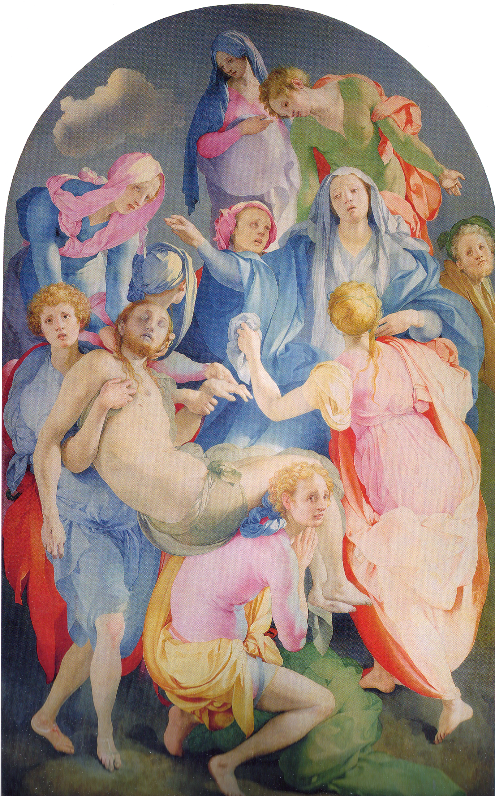
인물은 땅의 무게를 잃은 듯 겹치고, 깊이를 재는 건축과 안정된 중심축은 사라진다. 차갑고 밝은 분홍·청색과 길어진 몸은 자연스러운 조화 대신 불안과 인공성을 새로운 표현 가치로 만든다.
볼 지점: 발이 디딜 공간이 모호한데도 색과 시선이 군상을 결속하는 방식.
비판의 의미: 매너리즘은 르네상스의 관찰과 기술을 폐기하지 않고, 그 기술이 만든 ‘자연스럽고 완전한 조화’가 유일한 답이라는 믿음을 흔들었다.
표는 지역이 아니라 확인된 시대 단계·화파를 먼저 묶고, 각 묶음 안에서 출생 연도순으로 배열한다. 어느 하위 계보로 한정하기 어려운 작가는 르네상스 공통 범주에 둔다.
| 단계·계보 | 학습 | 미술가와 분야 | 주요 활동 환경 | 고유한 특징 | 대표 작품 |
|---|---|---|---|---|---|
| 초기 르네상스 | 중급 | 프라 안젤리코회화 · c.1395-1455 | 피렌체, 로마 | 수도원적 경건함과 새 원근 공간의 결합 | 수태고지 · 1438-1445 |
| 초기 르네상스 | 초심자 | 마사초회화 · 1401-1428 | 피렌체 | 원근법과 명암으로 만든 육중한 인간 | 성 삼위일체 · 1425-1427 |
| 초기 르네상스 | 중급 | 피에로 델라 프란체스카회화 · c.1415-1492 | 중부 이탈리아 | 수학적 공간과 고요한 빛의 질서 | 그리스도의 채찍질 · 1455-1460 |
| 초기 르네상스 | 초심자 | 산드로 보티첼리회화 · 1445-1510 | 피렌체 | 선율적 윤곽과 신화적 시정 | 비너스의 탄생 · 1484-1486 |
| 전성기 르네상스 | 초심자 | 레오나르도 다 빈치회화 · 1452-1519 | 피렌체, 밀라노, 프랑스 | 과학적 관찰과 심리적 모호성 | 최후의 만찬 · 1495-1498 |
| 전성기 르네상스 | 초심자 | 미켈란젤로조각·회화 · 1475-1564 | 피렌체, 로마 | 인체의 잠재력과 장대한 긴장 | 아담의 창조 · 1508-1512 |
| 전성기 르네상스 | 초심자 | 라파엘로회화 · 1483-1520 | 우르비노, 피렌체, 로마 | 명료한 구성과 조화로운 인물 관계 | 아테네 학당 · 1509-1511 |
| 초기 네덜란드 화파 | 중급 | 로베르 캉팽회화 · c.1375-1444 | 투르네 | 가정적 실내와 상징적 사물의 결합 | 메로드 제단화 · 1427-1432 |
| 초기 네덜란드 화파 | 초심자 | 얀 반 에이크회화 · c.1390-1441 | 브뤼헤, 부르고뉴 궁정 | 유화 층과 광학적 세부의 정밀함 | 겐트 제단화 · 1432 |
| 초기 네덜란드 화파 | 중급 | 로히어르 판 데르 베이던회화 · c.1399-1464 | 브뤼셀 | 압축된 공간과 강렬한 집단 감정 | 십자가에서 내림 · c.1435 |
| 초기 네덜란드 화파 | 중급 | 한스 멤링회화 · c.1430-1494 | 브뤼헤 | 고요한 인물과 세련된 제단화 구성 | 최후의 심판 · 1467-1471 |
| 베네치아 화파 | 중급 | 조반니 벨리니회화 · c.1430-1516 | 베네치아 | 빛나는 색채와 명상적 풍경 | 동산에서의 고뇌 · c.1459 |
| 베네치아 화파 | 중급 | 조르조네회화 · c.1478-1510 | 베네치아 | 시적 분위기와 수수께끼 같은 풍경 | 폭풍 · c.1506 |
| 베네치아 화파 | 초심자 | 티치아노회화 · c.1488-1576 | 베네치아, 유럽 궁정 | 색채 층과 붓질로 만든 빛과 육체 | 성모 승천 · 1516-1518 |
| 베네치아 화파 | 중급 | 틴토레토회화 · 1518-1594 | 베네치아 | 급격한 단축법과 극적인 속도감 | 노예의 기적 · 1548 |
| 베네치아 화파 | 중급 | 파올로 베로네세회화 · 1528-1588 | 베로나, 베네치아 | 화려한 건축 무대와 축제적 군상 | 가나의 혼인 잔치 · 1562-1563 |
| 도나우파 | 중급 | 알브레히트 알트도르퍼회화 · c.1480-1538 | 레겐스부르크, 도나우 유역 | 인물을 압도하는 자율적 자연 풍경 | 숲속의 성 게오르기우스와 용 · 1510 |
| 도나우파 | 중급 | 볼프 후버회화 · c.1485-1553 | 파사우, 도나우 유역 | 표현적인 산림과 종교 서사의 결합 | 그리스도의 애도 · 1524 |
| 르네상스 공통 범주 | 중급 | 마티아스 그뤼네발트회화 · c.1470-1528 | 마인츠, 알자스 | 고통의 신체와 환상적 색채의 극대화 | 이젠하임 제단화 · 1512-1516 |
| 르네상스 공통 범주 | 초심자 | 알브레히트 뒤러판화·회화 · 1471-1528 | 뉘른베르크, 베네치아 | 북유럽 관찰과 이탈리아 비례론의 종합 | 묵시록의 네 기사 · 1498 |
| 르네상스 공통 범주 | 중급 | 루카스 크라나흐 1세회화·판화 · 1472-1553 | 비텐베르크 | 궁정 초상과 종교개혁 이미지의 간결함 | 마르틴 루터의 초상 · 1528 |
| 르네상스 공통 범주 | 초심자 | 한스 홀바인 2세회화 · c.1497-1543 | 바젤, 런던 | 정밀한 초상과 지식·권력의 상징 | 대사들 · 1533 |
| 르네상스 공통 범주 | 초심자 | 대 피터르 브뤼헐회화 · c.1525-1569 | 안트베르펜, 브뤼셀 | 계절·노동·군중을 아우르는 사회적 풍경 | 눈 속의 사냥꾼 · 1565 |
시대 단계는 양식의 전개를 설명하고, 화파·계보는 실제 활동 중심과 전승 관계를 설명한다. 한 작가가 시대 단계와 화파에 동시에 속할 수 있으므로 두 축은 배타적 분류가 아니다.
| 구분 | 성격 | 핵심 특징 | 주요 미술가 |
|---|---|---|---|
| 초기 르네상스 | 시대 단계 | 원근법·해부학·고전 비례를 실험하며 새로운 공간과 인물을 확립 | 프라 안젤리코, 마사초, 피에로 델라 프란체스카, 보티첼리 |
| 전성기 르네상스 | 시대 단계 | 관찰·고전성·구성·심리 표현이 기념비적 종합에 도달 | 레오나르도, 미켈란젤로, 라파엘로 |
| 초기 네덜란드 화파 | 화파·계보 | 유화의 투명한 층, 세부 관찰, 사물의 상징성과 궁정·도시 후원 | 캉팽, 반 에이크, 판 데르 베이던, 멤링 |
| 베네치아 화파 | 화파·계보 | 색채와 빛, 유화의 물질성, 풍경과 감각적 분위기의 강조 | 벨리니, 조르조네, 티치아노, 틴토레토, 베로네세 |
| 도나우파 | 화파·계보 | 도나우 유역의 산림과 빛을 표현적 주체로 삼아 풍경의 자율성을 확대 | 알트도르퍼, 후버 |
‘독일 르네상스’, ‘이탈리아 르네상스’ 같은 지역명은 편의상 활동 환경을 가리킬 수 있지만 이 문서의 독립 사조 또는 화파 분류로 사용하지 않는다.
아래 표는 화파를 단순한 기법의 차이로 보지 않고, 어떤 집단이 어떤 이미지를 필요로 했고 그 요구가 어떻게 공통의 화풍으로 정착했는지 살핀다.
| 기존 질서와 긴장 | 교회·귀족·도시 공동체의 종교 이미지는 신성한 위계와 공동체 질서를 보여야 했다. 그러나 도시공화국의 길드와 상인층은 시민의 명예, 현실 공간, 개별 인간의 존재를 더 분명히 보이는 언어를 필요로 했다. |
|---|---|
| 새 후원·환경 | 피렌체의 길드는 수호성인과 직업 집단의 명예를 공공장소에 보이려 했고, 도시 정부는 질서 있고 유능한 공동체의 위신을 드러내려 했다. 상인·은행가 가문은 예배당·궁전·초상을 통해 신앙심과 성공, 가문의 지속성을 함께 보여 주려 했으며, 교회는 신앙 이야기를 관람자가 더 가깝고 설득력 있게 이해하도록 만들고자 했다. |
| 시각 언어 | 원근법, 해부학, 고전 비례, 무게를 가진 인물은 성스러운 사건을 관람자와 같은 현실 공간에 놓았다. |
| 정착 경로 | 공공 조각, 예배당, 궁전, 길드 주문과 공방 교육이 실험을 반복 가능한 도시의 시각 언어로 만들었다. |
| 기존 질서와 긴장 | 초기의 시민적·인문주의적 실험은 더 큰 규모의 종합과 권위의 언어로 바뀌었다. |
|---|---|
| 새 후원·환경 | 교황청과 추기경은 로마가 보편 교회의 중심이자 고대의 후계자임을 보이려 했고, 궁정과 강력한 가문은 교양·군사력·왕조의 지속성을 기념비적 이미지로 정당화하려 했다. 도시 국가는 경쟁 도시와 외부 강대국 앞에서 자신의 부와 통치 역량을 보일 공공 공간과 대형 작품을 필요로 했다. |
| 시각 언어 | 기념비적 인체, 고전 건축, 안정된 중심축, 대규모 군상은 다양성을 하나의 질서로 묶는 형식이 되었다. |
| 정착 경로 | 로마와 궁정의 대형 주문, 작가 이동, 명성과 모방이 초기의 새 언어를 유럽적 권위의 기준으로 확산시켰다. |
| 기존 질서와 긴장 | 궁정의 과시와 도시의 사적 경건, 상업적 성공이 함께 이미지를 요구했다. |
|---|---|
| 새 후원·환경 | 부르고뉴 공작 궁정은 왕에 버금가는 장관과 통치의 정당성을 보여 주려 했고, 상인·금융가와 길드는 국제 무역으로 얻은 신용·부·도시 내 지위를 가시화하려 했다. 교회와 개인 후원자는 성인의 전구와 개인 기도를 가까운 일상 공간에서 묵상할 수 있는 이미지를 원했다. |
| 시각 언어 | 정밀한 유화는 보석·직물·금속·빛을 통해 재산, 사회적 지위, 개인 기도를 한 화면에 담았다. |
| 정착 경로 | 궁정 주문, 도시 공방과 길드, 국제 무역망이 재료와 작품, 화가를 함께 유통시켰다. |
| 기존 질서와 긴장 | 해상 공화국의 귀족·상인·국가·교회는 공적 의례와 국제 교역 속에서 도시의 위신을 보일 이미지를 필요로 했다. |
|---|---|
| 새 후원·환경 | 국가 기관은 해상 공화국의 안정과 영광을 공적 의례와 장식으로 보여 주려 했고, 귀족·상인·교회는 국제 교역으로 쌓은 부, 가문의 명예, 신앙적 헌신을 표현하려 했다. 국제 고객과 외래 재료의 유입은 베네치아가 세련되고 풍요로운 문화 중심지라는 이미지를 강화할 작품 수요를 만들었다. |
| 시각 언어 | 빛과 색의 겹침, 풍부한 유화 표면, 넓은 풍경은 물질적 풍요와 의례의 장관을 표현했다. |
| 정착 경로 | 공방의 계승, 교회·국가의 대형 주문, 국제적 고객과 작가 이동이 화풍을 확산시켰다. |
| 기존 질서와 긴장 | 분권적 제국 질서와 종교개혁 전후의 신앙 논쟁은 서로 다른 제후·도시·교회 관람자를 만들었다. |
|---|---|
| 새 후원·환경 | 제후 궁정은 영토의 권위와 신앙적 입장을 드러낼 이미지가 필요했고, 자유도시의 상인·공방은 지역 시장과 시민 관람자를 위한 작품을 생산했다. 교회와 종교개혁 관련 세력은 교리·개인 신앙·공동체 정체성을 설득할 이미지를 찾았으며, 인쇄·판화 시장은 이런 논쟁과 초상을 빠르고 넓게 퍼뜨릴 수 있게 했다. |
| 시각 언어 | 자연이 인물보다 강하게 다가오는 풍경, 강한 종교 정서, 널리 복제되는 판화와 초상이 서로 다른 관람자에게 응답했다. |
| 정착 경로 | 공방·도시 시장·판화 유통·제후의 보호가 개인의 실험을 더 넓은 계보와 화풍으로 굳혔다. |
중세 미술과의 관계: 르네상스는 종교 주제와 공방 전통을 버린 단절이 아니다. 제단화와 성상이라는 기존 기능을 이어 가면서도 관찰된 인간, 측정 가능한 공간, 고전적 형식을 새롭게 결합했다.
매너리즘과의 관계: 1520년 무렵 이후 일부 작가는 전성기의 균형과 자연스러운 비례를 의도적으로 늘이고 비틀었다. 따라서 매너리즘은 단순한 쇠퇴가 아니라 르네상스가 확립한 규칙을 자의식적으로 변형한 인접 사조로 읽는다.
종교개혁 이후: 북유럽의 종교 갈등과 판화 시장, 궁정 초상의 성장은 이미지의 기능과 관람자를 바꾸었다. 이 변화 속에서도 자연 관찰과 개인의 존재감이라는 르네상스의 공통 기반은 다양한 형태로 지속되었다.
작품 카드는 위 표와 같은 작가·작품·순서를 유지한다. 이미지를 보고 공간, 인물, 빛, 재료가 르네상스의 공통 원리와 각 계보의 차이를 어떻게 드러내는지 확인한다.
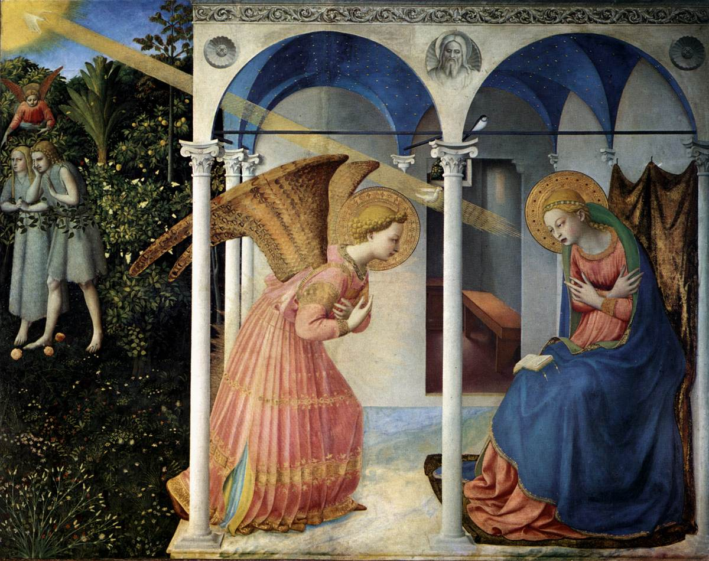
수도원의 침묵과 새 원근 공간이 충돌 없이 결합된 초기 르네상스의 핵심 사례다.
단순한 회랑의 깊이와 부드러운 빛은 성스러운 사건을 관람자의 현실 공간 가까이에 놓는다.
선원근법이 벽을 실제 건축 공간처럼 열어 보이는 대표적인 출발점이다.
소실점과 건축 비례, 무게 있는 인체가 신학적 위계를 눈앞의 일관된 공간으로 바꾼다.
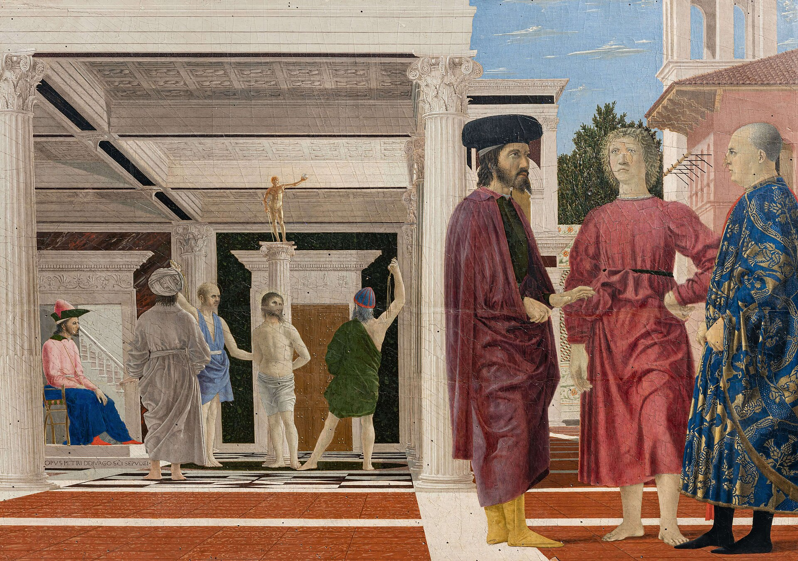
복잡한 서사를 수학적 공간과 빛의 질서로 통제하는 방식을 보여 준다.
전경과 후경의 분리, 정확한 건축 원근, 정지된 인물은 사건을 차갑고 명상적인 구조로 만든다.
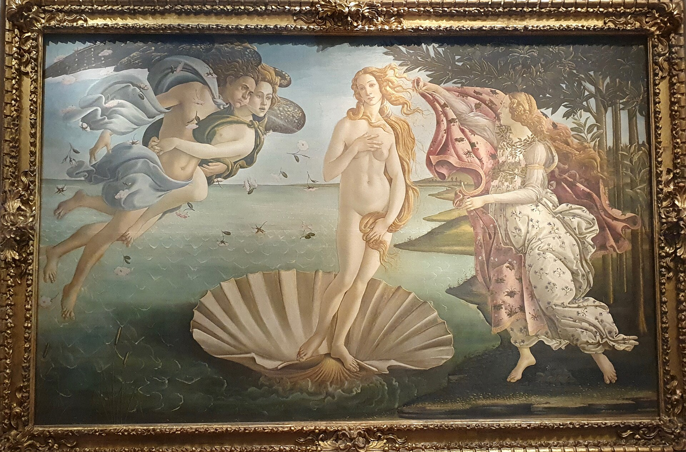
고대 신화가 르네상스 인문주의와 선의 아름다움으로 재해석된 상징적 작품이다.
해부학적 사실성보다 길고 유려한 윤곽과 리듬을 택해 이상적 아름다움과 시적 정서를 강조한다.
원근 공간, 심리 반응, 군상 구성이 하나의 순간에 종합된다.
모든 선은 그리스도에게 모이고, 제자들의 몸짓은 충격이 퍼지는 시간을 화면 전체에 펼친다.
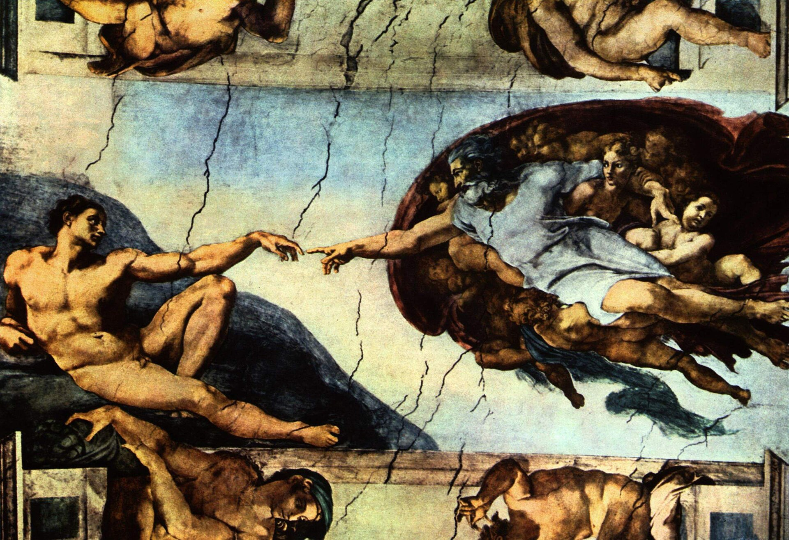
인간 신체를 정신적·창조적 잠재력의 기념비로 만든 전성기의 표상이다.
거대한 두 신체와 거의 닿을 듯한 손가락 사이의 간격이 생명의 전달을 극적인 긴장으로 바꾼다.
고대 철학, 기념비적 건축, 다양한 인간 유형을 명료한 조화로 묶는다.
중앙의 플라톤과 아리스토텔레스를 기준으로 군상이 질서 있게 퍼지며 지적 공동체의 이상을 시각화한다.
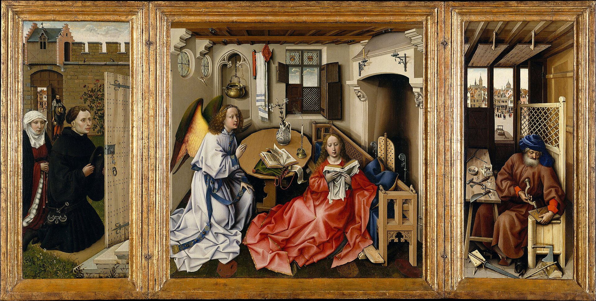
신성한 사건을 당대 가정의 세부와 상징물 속에 배치한 초기 네덜란드 회화의 핵심이다.
촛불, 수건, 백합 같은 일상 사물이 정밀한 표면과 상징적 의미를 동시에 지닌다.
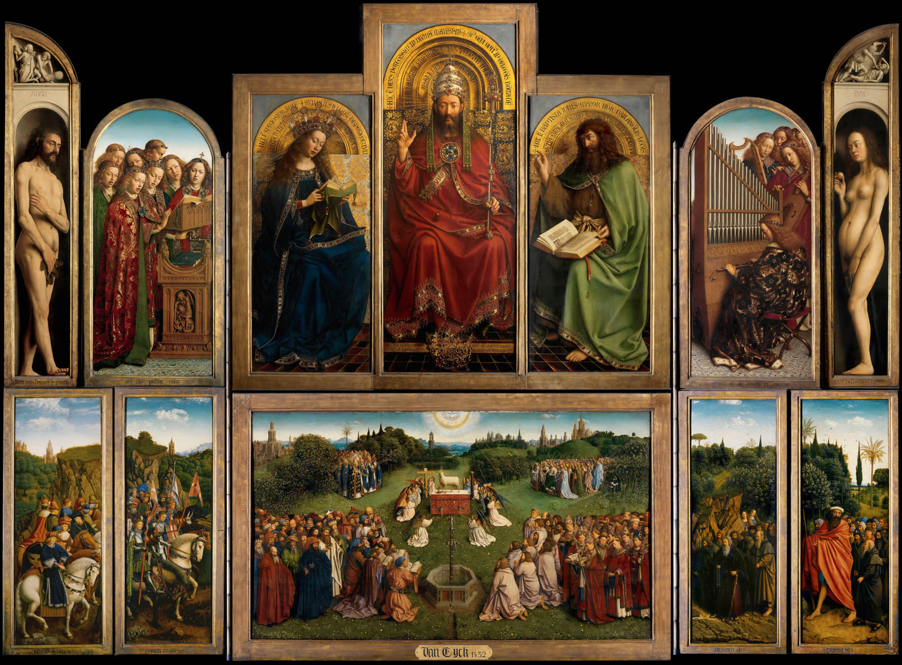
광택, 보석, 피부, 식물까지 포착하는 유화의 힘과 복합 도상을 함께 보여 준다.
다층 패널은 천상과 지상을 잇고, 빛을 머금은 표면은 보이는 세계 자체를 신성한 증거로 만든다.
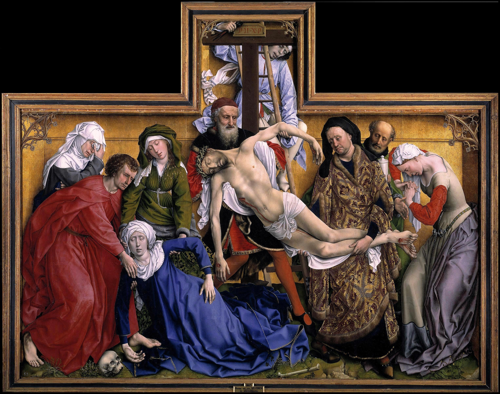
정밀 묘사가 감정의 억제가 아니라 극적인 공감의 장치가 될 수 있음을 보여 준다.
그리스도와 성모의 평행한 몸, 좁은 금빛 공간에 밀집한 군상이 슬픔을 하나의 파동으로 묶는다.
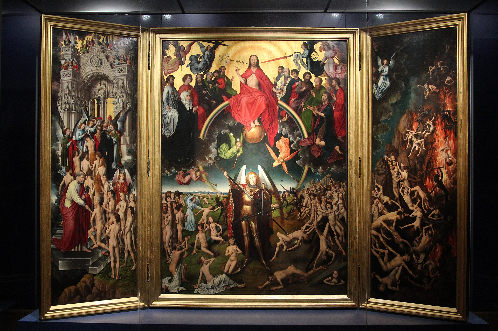
복잡한 구원 서사를 맑은 색과 균형 잡힌 세 패널에 조직한 계보의 성숙을 보여 준다.
중앙의 미카엘을 축으로 천국과 지옥이 갈리며, 수많은 작은 인물도 또렷한 몸과 표정을 유지한다.
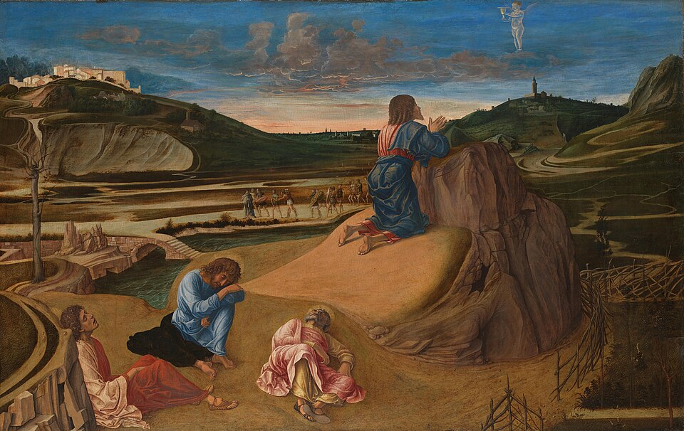
풍경의 새벽빛이 인물의 종교적 감정과 하나가 되는 베네치아적 색채 감각의 출발점이다.
따뜻한 하늘빛이 바위와 도시, 그리스도의 몸을 연결하며 풍경이 서사의 정서적 주체가 된다.
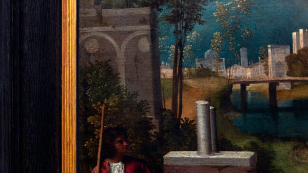
명확한 이야기보다 날씨와 빛, 불안한 분위기가 화면의 의미를 이끄는 전환점이다.
번개 치는 하늘과 젖은 녹색 풍경 사이에 떨어진 인물들은 해석을 열어 둔 채 시적 긴장을 만든다.

붉은색과 황금빛, 상승 운동이 거대한 제단화의 감정과 구조를 동시에 지배한다.
사도, 성모, 천상의 세 층이 색채와 몸짓으로 이어져 선보다 색이 공간과 에너지를 만드는 방식을 드러낸다.
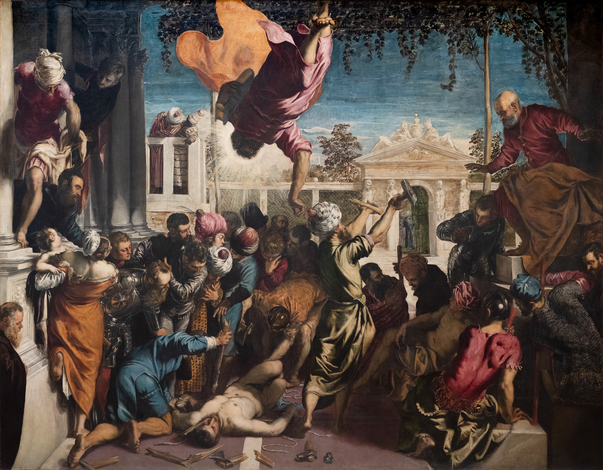
급강하하는 성인과 뒤틀린 군상이 전성기 균형 이후의 극적 가능성을 보여 준다.
과감한 단축법과 비대칭 구도, 강한 명암은 기적이 실제 공간을 찢고 들어오는 듯한 속도를 만든다.
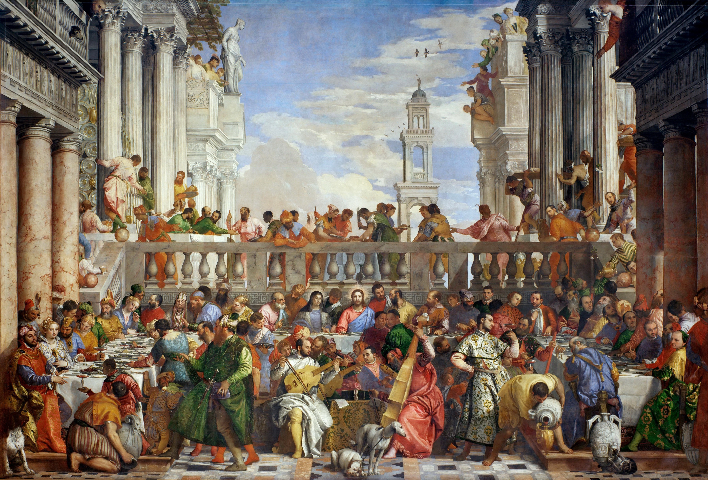
성서 이야기를 베네치아의 건축, 의상, 음악이 가득한 공공 축제로 확장한다.
거대한 고전 건축과 수많은 인물이 밝은 색채로 질서 있게 펼쳐져 도시 문화의 장관을 만든다.
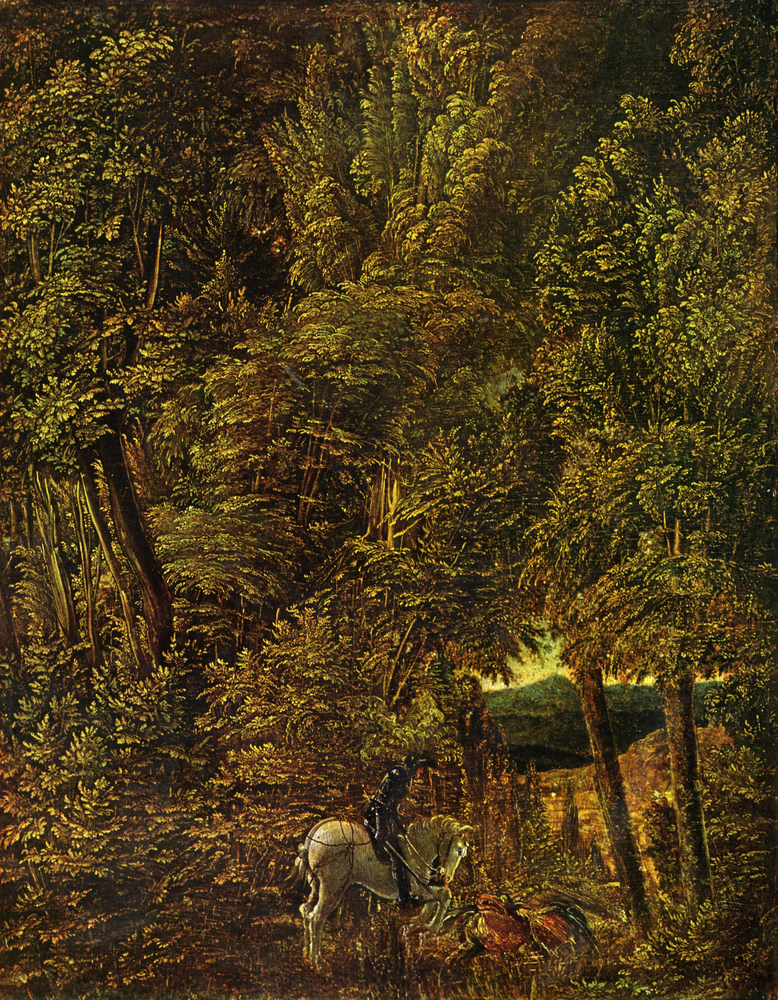
성인을 거의 삼켜 버리는 울창한 숲이 도나우파의 자연 중심 시각을 선명하게 보여 준다.
작은 기사와 용보다 겹겹의 잎, 나무, 어둠과 빛이 더 큰 비중을 차지해 풍경이 독립적 주제가 된다.
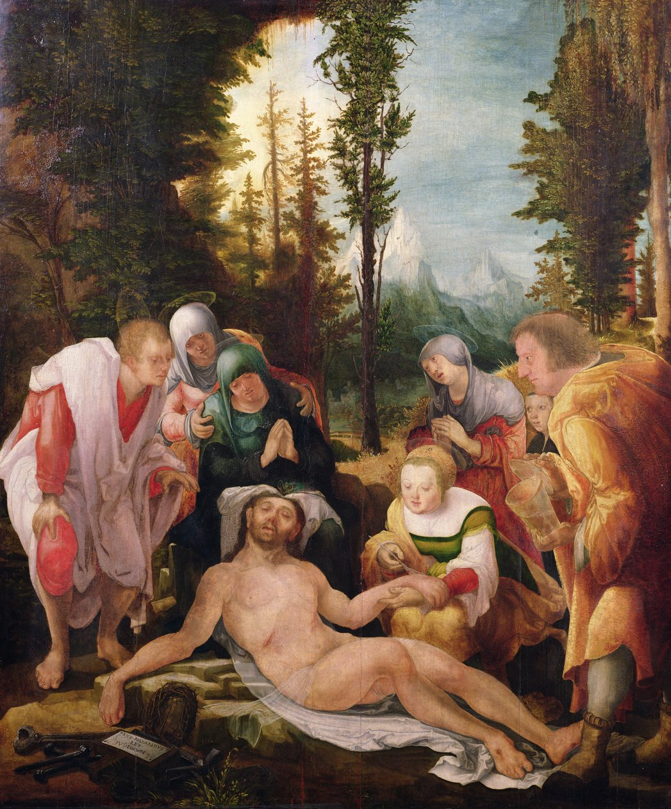
종교적 애도를 굽이치는 산림 풍경 안에 놓아 감정과 자연을 연결한다.
인물의 슬픔은 뒤편의 나무와 산세가 만드는 불안정한 리듬으로 확장되며 자연이 정서의 공명체가 된다.
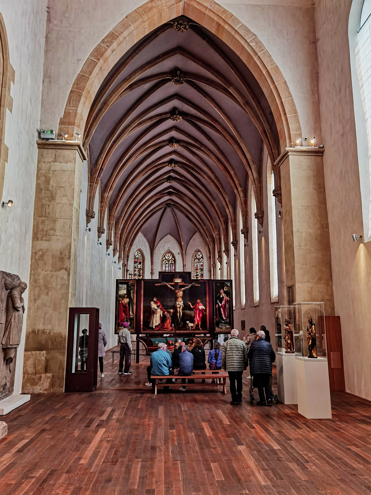
관찰된 육체가 반드시 고전적 조화를 향하지 않으며, 고통과 치유의 극단도 담을 수 있음을 보여 준다.
상처 입은 몸과 독성 같은 색채는 병원 제단화의 관람자에게 고통의 공감과 구원의 약속을 동시에 전달한다.
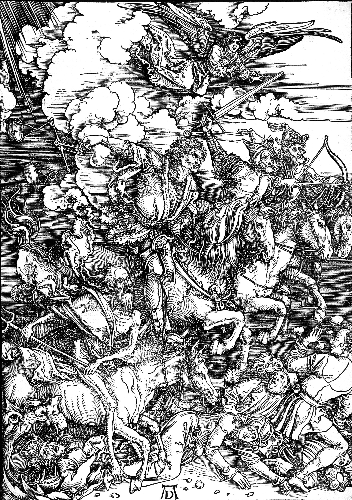
판화의 선으로 해부학적 몸, 폭발적 움직임, 대중적 복제를 하나로 묶은 르네상스적 성취다.
서로 겹친 말과 기사가 대각선으로 돌진하며 촘촘한 목판 선만으로 빛, 공간, 공포를 만든다.
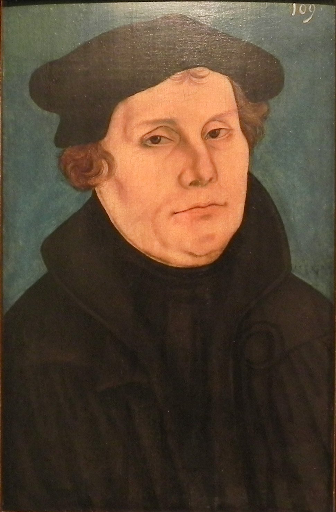
개인의 얼굴이 종교개혁의 정체성과 대중적 이미지로 기능한 사례다.
어두운 배경과 절제된 의상은 시선을 얼굴에 집중시키며 명료하고 반복 가능한 공적 초상 형식을 만든다.
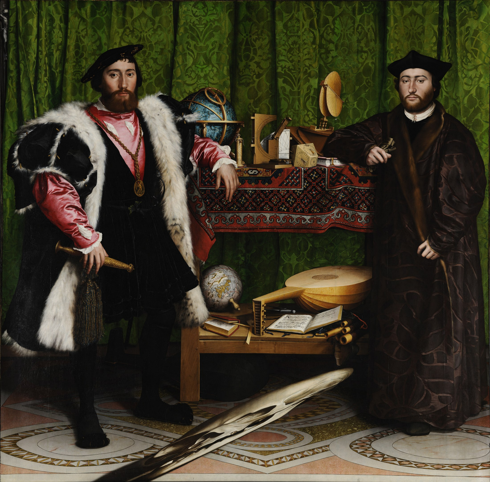
초상, 과학 도구, 직물, 왜상 두개골이 르네상스 지식과 권력의 양면을 압축한다.
정교한 물질 묘사는 두 인물의 지위와 세계 이해를 드러내지만, 비스듬히 보아야 나타나는 두개골은 죽음을 개입시킨다.
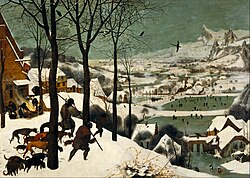
넓은 겨울 풍경과 작은 인간 군상을 통해 계절, 노동, 공동체의 삶을 르네상스 관찰의 대상으로 확장한다.
지친 사냥꾼에서 얼음 위 마을 사람들, 먼 산까지 이어지는 시선이 개인 영웅보다 집단의 생활과 환경을 함께 보여 준다.